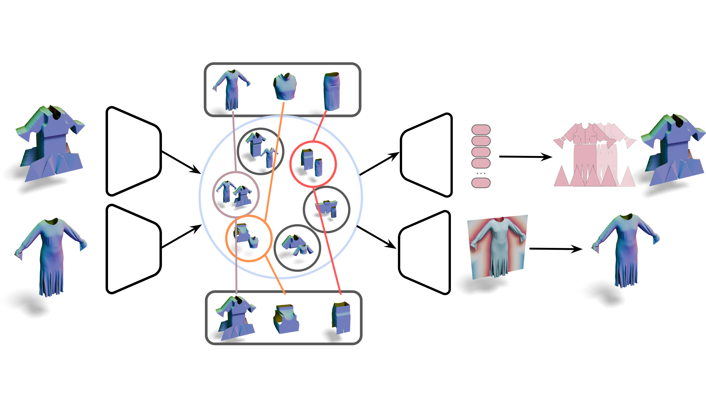
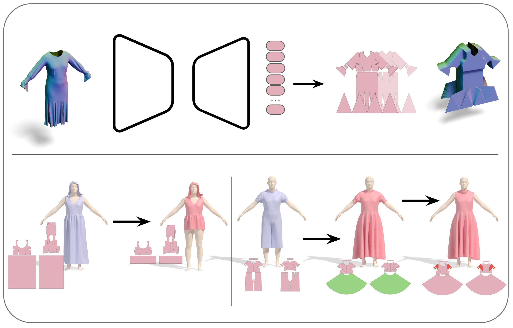
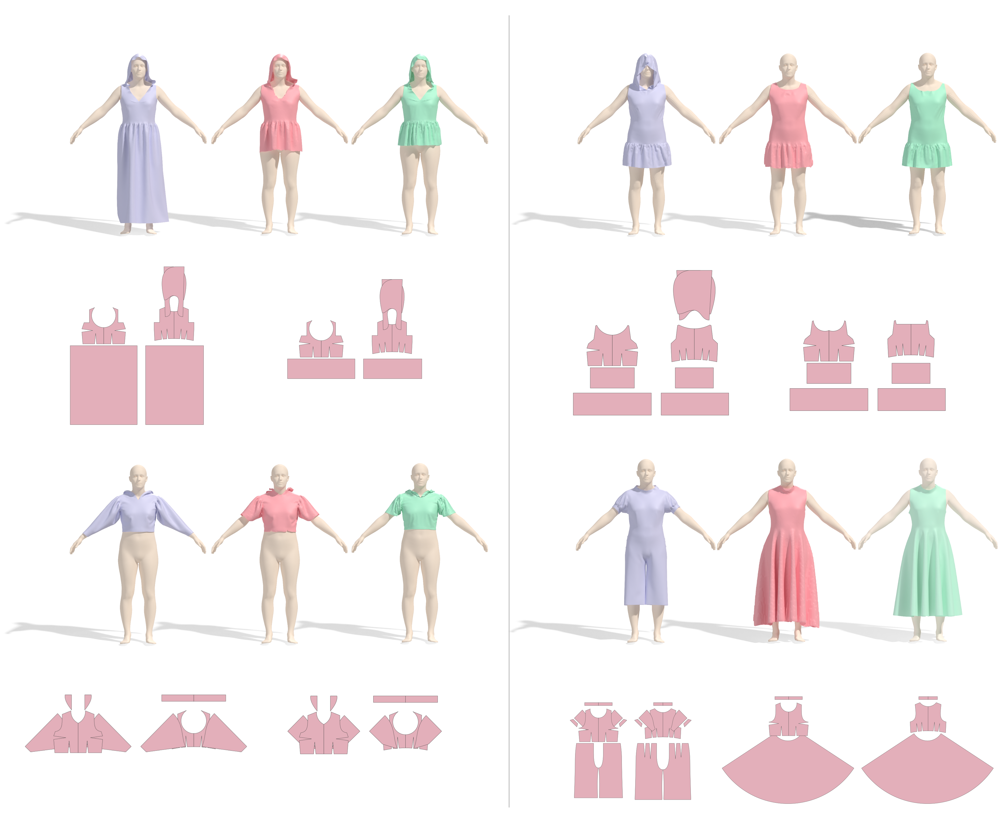

While garments are essential for realistic digital humans, their topological variety makes them much harder to model than parametric bodies. Traditional tailoring relies on 2D sewing patterns, yet bridging these patterns to 3D geometry currently requires physical simulations. We present Stitched Embeddings, the first simulation-free framework to unify 3D garment reconstruction and sewing pattern inference within a single bidirectional latent space. By leveraging the geometric priors of a pretrained 3D foundation model, our approach overcomes the data scarcity typically associated with high-quality garment modeling. We propose to use the BoxMesh as a critical intermediate representation to align 2D panels into 3D configurations without the computational overhead of a simulator. This architecture achieves state-of-the-art accuracy in pattern reconstruction while significantly improving efficiency. Furthermore, our differentiable pipeline enables novel applications, including pattern recovery from meshes and 3D editing from 2D patterns. Finally, this work provides a scalable link between neural 3D vision and the physical garment manufacturing pipeline.

\(\mathbf{B}\) \(\mathbf{P}\) \(\mathcal{E}_{bm}\) \(\mathcal{E}_{g}\) \(\mathcal{D}_{SP}\) \(\mathcal{D}_{3D}\) Patterns Params Sewing Patterns UDFStEm-Net is the first end-to-end differentiable method that unifies multiple representations in a common, compact latent space. The model maps BoxMeshes (\(\mathbf{B}\)) and 3D garments (\(\mathbf{P}\)) into Stitched Embeddings through the encoders \(\mathcal{E}_{bm}\) and \(\mathcal{E}_{g}\). From this shared latent space, the decoders \(\mathcal{D}_{SP}\) and \(\mathcal{D}_{3D}\) recover the sewing-pattern parameters and the garment UDF, respectively.

From 3D to Sewing Pattern \(\mathcal{E}_{g}\) \(\mathcal{D}_{SP}\) Garment Editing Input Edited Input Swap RemoveThe two inference modalities of StEm-Net: prediction of sewing-pattern parameters from an input 3D mesh (top, From 3D to Sewing Pattern), and editing of 3D garments driven by 2D pattern edits — such as swapping or removing panels (bottom, Garment Editing).

Autoencoding with StEm-Net. The input mesh (left) is mapped by the garment encoder \(\mathcal{E}_{g}\) into the StEm latent space, from which we recover the 3D garment via \(\mathcal{D}_{3D}\) and the sewing patterns via \(\mathcal{D}_{SP}\); we also simulate the recovered patterns to obtain a second 3D realization (right). Both the directly decoded 3D output and the simulated sewing patterns produce geometry close to the ground truth, demonstrating the reliability of our approach.

Initial Mesh StEm-Net GT Initial Mesh StEm-Net GT Input Patterns Edited Patterns Input Patterns Edited Patterns Initial Mesh StEm-Net GT Initial Mesh StEm-Net GT Input Patterns Edited Patterns Input Patterns Edited PatternsEditing examples. For each example we show, on the left, the initial sewing pattern with its 3D physical simulation (Initial Mesh, blue); on the right, the edited sewing pattern with our network's prediction (StEm-Net, red) and the ground truth (GT, green). Our framework accurately estimates the garment's appearance without physical simulation, both for global behaviors (e.g., the length of garment components) and for the addition or removal of parts (e.g., replacing trousers with a skirt, or removing sleeves and the hood).
For each example we show the initial simulation, the edit at the final step, and the ground-truth simulation, each draped on the body model. Below the 3D views are the corresponding 2D sewing patterns: the initial pattern under the initial simulation, and the edited pattern under the edited and ground-truth results. Drag to rotate and scroll to zoom each view.


@inproceedings{sanchietti2026stitched,
author = {Sanchietti, Andrea and Marin, Riccardo and Bhatnagar, Bharat Lal and Xu, Yuanlu and Pons-Moll, Gerard},
title = {Stitched Embeddings: A Unified Latent Space for 3D Garments and 2D Patterns},
booktitle = {European Conference on Computer Vision (ECCV)},
year = {2026},
}